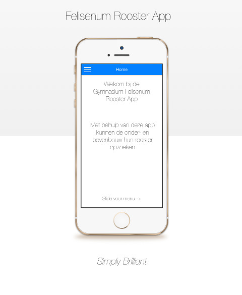

Met de nieuwe Rooster App kan je snel en gemakkelijk je rooster bekijken, en opslaan voor offline gebruik.
Dankzij onze vele updates komt er steeds meer funktionaliteit en ziet de app er mooi uit.
De app is alleen van toepassing voor leerlingen van het Gymnasium Felisenum.
- Snel en gemakkelijke toegang tot je rooster
- Clean and Simple, geen overbodige functies
- Slaat rooster op voor offline gebruik
- Maak gemakkelijk notities over mededelingen
- Gratis en er komt steeds meer funktionaliteit

App Icons by Joseph Wain / Glyphish
This work is licensed under a Creative Commons Attribution 3.0 United States License